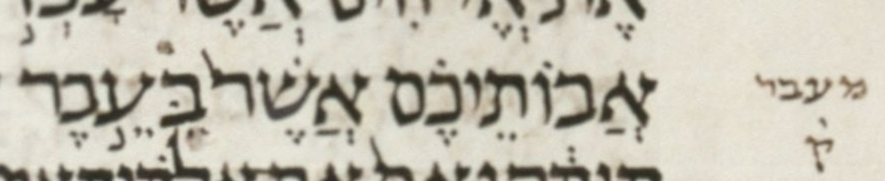

| bcv (link to tanach.us) | js24:15 |
| MPK | בְּעֵ֥בֶר |
| qere | מֵעֵ֣בֶר |
| at issue | מ |
| at issue English | removed a dagesh from mem |
| folio col line | 135B 1 2 |
The MPK’s בּ seems to carry a dagesh for the qere’s מ but it is rejected. This is the dual of js22:7.
Dotan notes that strictly speaking, the implied qere is מֵּעֵ֣בֶר, which gives the מ an unexpected dagesh.